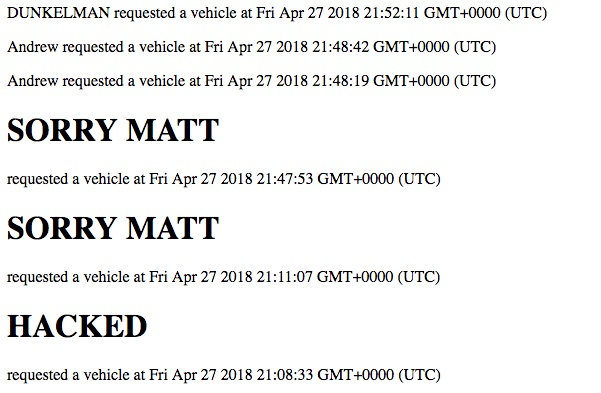
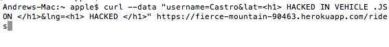
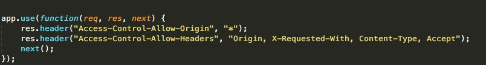
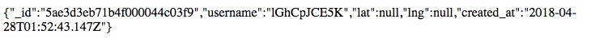

Andrew Castro's Hack of Matt Manfre's code
1. Introduction - I was hired to solve the security and privacy issues in
the application given to me by Matthew Manfre. It is a server for an Uber-like ride sharing service which has a few different GET/POST pathways.
The server interacts with a MongoDB database and receives requests from the client and also sends back response to the interface.
2. Methodology - I first started with testing where I did not have to look at the code of the website.
3. Bypassing Restrictions on Input Choices
I started with sending malicious inputs into the server as a client. For example, instead of saying my name is JANET, I said my name is "< html > HACKED < /html >".
I then looked at the source code from the client, where I saw vulnerabilites that could be exploited
by using curl command (which is a tool used to send data to the server, which the server then stores in a database)
I then looked for the general server permissions of allowing other sources to access the server. The user had CORS enabled for everyone, meaning anyone could access the server's information.
Finally, I looked at coding practices that would protect from these bugs in the first place. It is a good idea for a server to make sure that input is as normal as possible. Meaning it doesn't look like < html > tags or any links in it, if it's supposed to be an inputted number. There were vulnerabilities found in sanitizing input as well as making sure input is of the right format.
4. Issues Found
ISSUE 1


Issue: database injection. The program did not check or sanitize input before it is placed in the database.
Location: takes place on /rides post request when a client sends data to the server
Severity: High issue because any data curled in the correct format will be stored in the database, and that
database information is shared and used a lot by the rest of the server's paths. For example, vehicle.json
will then search that database and print to the user the fields in the object
Description of issue: I found it by 'black box' testing, meaning that I didn't look at my client's code to find the vulerability.
Proof of vulnerability: see above ^^^
Resolution: Add to the following code by sanitizing input to get rid of special characters that allow
injectionable HTMLs
var user = request.body.username;
var latitude = request.body.lat;
var longitude = request.body.lng;
user = user.replace(/[^\w\s]/gi, '');
latitude = latitude.replace(/[^\w\s]/gi, '');
longitude = longitude.replace(/[^\w\s]/gi, '');
ISSUE NUM 2

B) Issue: Cross-site request forgery. bad programming practice with allowing access to any source.
Location: Takes place across the entire server and its associatied paths
Severity: Medium because of a clear lack of server authenticiation is dangerous for any web application. Due to the above lines of allowing any origin to access the resource, the CORS initialization here is dangerous because
everyone now has access to the server's functionality. This is particularly bad because regardless of the identity
of the attacker or what IP or even server they have, they have access.
Per developer.moizlla.org "The origin parameter specifies a URI that may access the resource. The browser must enforce this. For requests without credentials, the server may specify "*" as a wildcard, thereby allowing any origin to access the resource." This is a medium sized problem because while it is useful that it allows
several different sources to access the response from the server, it is also bad / insecure for that reason
Description: I found the issue by inspecting my partners code (white box testing). I saw the '*' for
Access-Control-Allow-Origin and knew that was giving access to a lot of sources.
Proof of vulnerability: ^^ see above screenshot
Resolution: Add to the client code a section with XMLHttpRequest withCredentials to true.
More importantly, my client should send in the CORS header, Access-Control-Allow-Credentials and setting that header to true.
ISSUE NUM 3

C) Issue: Checking for valid input. Bad programming practice because will put NaN values into database
Location: post ./rides
Severity: Low because it will not break server in terms of what the client is concerned, however, it will reveal
something faulty about the inputted input or potentially malicious attacks from an attacker
Description: I found the issue by curling non numerical values into lattitude and longitude. I believe this is an error because it is only helpful that the server checks for invalid input.
Proof of vulnerability: ^^ see above screenshot
Resolution:
Add to the server code a checker for Nan, this way, it checks if any non numerical values were put in and does not put it into the server's database and the server does not try to access it later.
if (isNaN(x)) {
return NaN;
}
Conclusion
Future considerations would be to not do uneccessary checking that your code does not have to do. For example, in vehicle.json, the only specification is that it searches for vehicles. If the user is not giving a vehicle in the query string, you don't even have to search the passengers array (which you do). Unnecessary accesses to the database opens you up for more attacks
References used for this work
MING's DEF CON 21 Talk
CORS StackOverflow
CORS Mozilla
Security notes